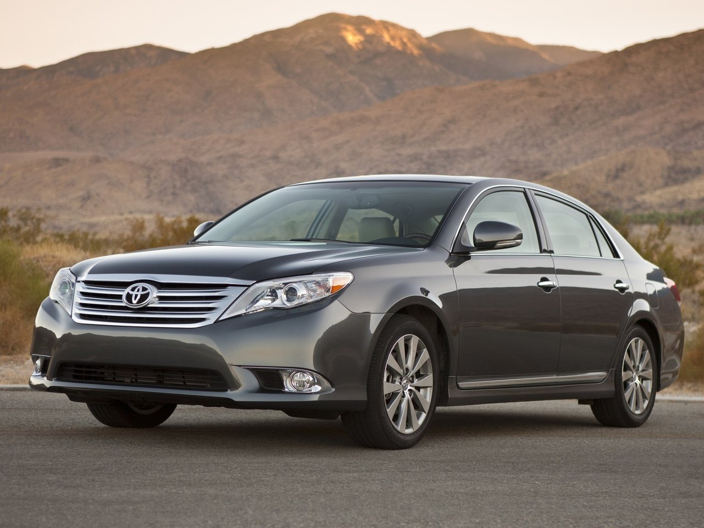

Экономия денег на бензине!
 skip to main | skip to sidebar
Экономия денег на бензине!
Давайте вместе зарабатывать деньги и получать удовольствие!
пятница, 1 февраля 2008 г.
ВНИМАНИЮ АВТОВЛАДЕЛЬЦЕВ!
ВНИМАНИЮ АВТОВЛАДЕЛЬЦЕВ!
РЕАЛЬНАЯ ЭКОНОМИЯ топлива от 20 до 40 %!
Если Вы капните всего один миллилитр (да, всего 1 мл.) в бензобак своего автомобиля (бензин, солярка) концентрированную нефтяную топливную БИОдобавку «Power Plus MPG» (перевод - двойная сила мили на галон), то буквально через несколько часов вы получите:
• экономию топлива на 20-40 % (и даже более);
• ощущение увеличения приёмистости, мощности и крутящего момента двигателя на 20-30 л. с.;
• реальную динамику разгона и увеличение скорости на 10-15 %;
• очень ровную, мягкую и бесшумную работу двигателя;
• при запуске двигатель прогревается в 2-3 раза быстрее;
• отсутствие сбоев «на холостых» оборотах;
• существенное уменьшение (до 80 %) выброса СО и СН;
• и многие другие преимущества, в зависимости от индивидуальных особенностей автомобиля и манеры вашего управления им.
1. МОДИФИЦИРУЕТ СТРУКТУРУ ТОПЛИВА, РАЩЕПЛЯЯ НА НЕСКОЛЬКО СОСТАВЛЯЮЩИХ МОЛЕКУЛУ ТОПЛИВА.
2. ПОВЫШАЕТ КОЭФФИЦИЕНТ СГОРАНИЯ ТОПЛИВА ДО 98%.
3. УВЕЛИЧИВАЕТ МОЩЬ ВАШЕГО АТВОМОБИЛЯ ЗА СЧЁТ ВЫСВОБОЖДЕНИЯ ДОПОЛНИТЕЛЬНОЙ ЭНЕРГИИ.
4. ОЧИЩАЕТ ИНЖЕКТОР, КАМЕРУ СГОРАНИЯ, ТРУБЫ И БЕНЗОБАК (ВСЮ ТОПЛИВНУЮ СИСТЕМУ).
5. ДЕЛАЕТ РАБОТУ ВАШЕГО ДВИГАТЕЛЯ МЯГКОЙ, РОВНОЙ И ПОЧТИ БЕСШУМНОЙ, ОБЕСПЕЧИВАЯ НЕОБХОДИМУЮ МЯГКУЮ СМАЗКУ ЧАСТЕЙ ДВИГАТЕЛЯ.
6. СПОСОБСТВУЕТ РАЗМЯГЧЕНИЮ И ПОСЛЕДУЮЩЕМУ УСТРАНЕНИЮ НАГАРА И ОКАЛИНЫ В КАМЕРЕ СГОРАНИЯ.
7. НЕ ВОЗДЕЙСТВУЕТ НА РЕЗИНОВЫЕ ПРОКЛАДКИ И ШЛАНГИ, СОХРАНЯЯ ИХ ТЕХНИЧЕСКИЕ ХАРАКТЕРИСТКИ, СОГЛАСНО УСТАНОВЛЕННОГО СРОКА ИХ ЭКСПЛУАТАЦИИ.
8. УВЕЛИЧИВАЕТ СРОК ЭКСПЛУАТАЦИИ ДВИГАТЕЛЯ В 2 РАЗА И ПЕРИОДИЧНОСТЬ ЕГО ОБСЛУЖИВАНИЯ.
9. СНИЖАЕТ СОДЕРЖАНИЕ СО И СН В ВЫХЛОПНЫХ ГАЗАХ В 3-4 РАЗА.
10. ЭКСПЛУАТАЦИЯ АВТО С БИОКАТАЛИЗАТОРОМ СУЩЕСТВЕННО СНИЖАЕТ ВРЕД, НАНОСИМЫЙ ОКРУЖАЮЩЕЙ СРЕДЕ.
11. ЗНАЧИТЕЛЬНО ЭКОНОМИТ РАСХОД ТОПЛИВА ПРИ ЭКСПЛУАТАЦИИ АВТОМОБИЛЯ, а значит и ваши деньги.
Звоните, спрашивайте, советуйтесь, экспериментируйте, зарабатывайте деньги, получайте удовольствие и экономию для себя и своей семьи.
За дополнительной информацией обращайтесь по телефону:
8 063 761 15 74
Эл почта: sspoisk@gmail.com
Skype - sspoisk
ICQ 384-608-730
Автор Станислав на 8:38 0 комментария(ев)
9 Декабрь 2007 г.
Руководство по экономии расхода топлива
Денег много не бывает. И бензина тоже! Любой водитель лишь порадуется, если аппетит его автомобиля станет меньше. Но вот какой ценой? За все хорошее приходится платить, и низкий расход топлива не исключение. Давайте поговорим о способах экономии бензина, о том, чем стоит или не стоит жертвовать ради этой экономии.
Основы основ
Актуальнейшая бензиновая тема обычно вызывает у собеседников неподдельный интерес. Но стоит нарисовать кривые удельных расходов и привести многоэтажную расчетную формулу, содержащую 13 (!) величин, как взор слушателей мутнеет. Один зевнет, но промолчит, другой попросит не морочить ему голову и объяснить на пальцах. Он будет прав на сто процентов. И хотя без физики с математикой порой трудно сформулировать мысль, если это удалось - ее легко понять!
Бороться с чрезмерной прожорливостью можно только на исправном автомобиле. Это основа, с нее нужно начинать. Компрессия в цилиндрах двигателя должна быть в норме, системы питания и зажигания отлажены, подшипники ходовой части легко вращаться, а фрикционные накладки тормозных колодок при движении автомобиля не пользоваться тормозами вхолостую.
Для экономии топлива в картер двигателя и коробки передач из рекомендованного заводом перечня лучше заливать то масло, что пожиже (в пределах разумного, конечно!). Особое внимание схождению-развалу. Короче говоря, содержите автомобиль в исправном состоянии. Даже если вы представитель меньшинства и на расход топлива не обращаете внимания - все равно не пожалеете.
Для экономии предпочтительнее бескамерные покрышки радиальной конструкции. Давление во всех четырех колесах должно быть не ниже рекомендованного заводом. Проверяйте его почаще. Манометр точнее визуального осмотра и постукивания. Полезный шаг - повышение давления в шинах в диапазоне от рекомендованного до максимально допустимого (указано на боковине любой покрышки). Это действие неизбежно отразится на управляемости и плавности хода автомобиля. Не влезая в технические дебри, предложим разумный компромисс. Если норма 2 кгс/см2, то качаем до 2,3-2,5 кгс/см2. Дальше не стоит.
Не грузите генератор! На обслуживание кондиционера, электростеклоподъемников, фар, вентилятора отопителя, обогрева стекол или сидений, аудиоцентра, дополнительного оборудования типа холодильников и автокофеварок требуется много энергии. Как следствие - повышенный расход бензина. Поэтому пользуйтесь тем, что действительно необходимо. Магнитола, звучащая на полную мощность, и включенный кондиционер заметно увеличивают потребление топлива.
В корне изменить аэродинамику машины мы не в силах. Но пореже ездить с открытыми окнами, не ставить на крышу багажник и не таскать угловатый прицеп все же можем. Не стоит запихивать под пружины и амортизаторы проставки для повышения клиренса. За сомнительную вездеходность заплатите повышенным расходом топлива. И это, поверьте, не худшее из зол от применения проставок!
Тюнинговые аэродинамические нашлепки метко прозваны "обвесом". Затраты большие, эффект, как правило, нулевой или даже отрицательный. Спроектировать, изготовить и правильно установить спойлер умеют единицы. Может быть, лучше не экспериментировать? Прокладки под карбюратор, турбинки, "чудесные" модификаторы трения в лучшем случае бесполезны. Их цель - разорить борцов за экономию не мытьем, так катаньем.
А вот маршрутные компьютеры заслуживают внимания. Многие иномарки ими уже оборудованы, а на отечественные автомобили их можно установить. От компьютера водитель получает полную информацию о текущем и среднем расходе топлива. С его помощью понизить аппетит машины на 0,5 л на 100 км не составляет труда.
Если электроника не по карману - поможет эконометр, который по разрежению во впускном коллекторе позволяет судить о расходе. Такие приборы вмонтированы в "низких" панелях переднеприводных ВАЗов, но продаются и отдельно.
Владельцам дорогих иномарок не стоит забывать о круиз-контроле. Он поддерживает заданную скорость, пользуясь оптимальным алгоритмом управления. Умная электроника манипулирует газом точнее, чем нога водителя, а значит, меньше топлива улетит в выхлопную трубу.
Маршрут имеет значение
Проявите осмотрительность при выборе маршрута и времени поездки. Общая стратегия такова: чем меньше разница между пиковыми и средней скоростями, тем лучше. Залог успеха - равномерность движения. Приведем примеры. Вы хорошо знаете местность, в которой живете, и обстановку на дорогах. Если собираетесь съездить за город, выбирайте время, когда трасса не загружена.
Не планируйте покупок в пути, лучше запаситесь всем необходимым заранее. Постарайтесь также договориться с вашим штурманом о минимуме остановок - тяга прекрасной половины человечества тормозить водителя у каждого киоска общеизвестна. Пойдете на поводу у собственной супруги - быстрее опустошите бак.
Учитывайте физиологию человека. Перед дальней дорогой не пейте много воды, не забудьте и о пассажирах. Это не шутка. Путешествие может превратиться в сущий ад: от куста к кусту по принципу "девочки - направо, мальчики - налево", а оттуда сразу на заправку.
Жителям крупных городов, проводящим выходные на даче, хуже всего приходится в пятницу вечером на выезде из мегаполиса и в воскресенье вечером на въезде в него. В этой нервной толчее самая совершенная техника потребляет бензин ведрами.
Что делать? Единого рецепта нет! Одни отпрашиваются с работы пораньше, другие откладывают поездку на позднюю ночь, третьи возвращаются с дачи в понедельник с утра. В общем, если обстоятельства позволяют, постарайтесь не попадать в часы пик.
Сутолока городских улиц с трудом поддается прогнозированию. Здесь оптимальный маршрут подбирается экспериментальным путем. Причем длинный путь может оказаться быстрее и экономичнее короткого. В любом случае дорогу до работы и обратно следует изучить до мельчайших подробностей. Представлять ее загрузку в зависимости от дня недели, знать режим работы светофоров и т. д.
Пейнтбол.
Перевозка малононажных грузов от двери до двери Автор: Станислав на 09:11 2 комментария:
Две жизни
Они скажут, что этот бизнес не для вас;Они скажут, что это пирамида;
Они скажут, что у людей нет денег;
Они скажут, что у вас не тот возраст;
Они скажут: "Посмотрим, сколько ты заработаешь, а потом подумаем";
Они скажут, что сейчас не то время;
Они скажут, что соседка их племянницы ничего не заработала на прямых продажах;
Они скажут, что вы не сможете заниматься этим бизнесом;
Они скажут, что вам надо устроиться на "нормальную работу";
Они скажут, что это жульничество;
Они скажут, что у вас не получится;
Они скажут, что этим бизнесом надо заниматься в Америке или на худой конец в Москве, но не там, где вы живете;
Они скажут, что ваша продукция никому не нужна;
Они расскажут, какую передачу видели по ТВ в 1997 году;
Они точно знают, как вы должны жить, чем заниматься и сколько зарабатывать.
"Они" - это не только ваши соседи, родственники, друзья и прочие доброжелатели. "Они" - это еще и мысли в вашей голове, которые притаились в подсознании, как тараканы за кухонным шкафом. И стоит выключить свет, как они вылезут и начнут свою грязную беготню.
По большому счету, у вас есть только 2 варианта:
Плюнуть на этот бизнес, устроится на "нормальную работу" с 8 до 18, как и Они , жить в таких же квартирах, как Они , отдыхать на таких же грядках, как у Них , смотреть те же телесериалы о красивой жизни, как Они . Так сделает 90% неудачников, как Они .
А можно позволить себе жить НЕ так, как советует Марья Ивановна, и прихлопнуть этих тараканов. Вас ждет много трудной, но интересной работы. Над собой, над своими страхами и сомнениями, над своим характером. Вас ждут сотни, а может быть и тысячи отказов. Но отказы сделают вас сильнее. И в один прекрасный день вы обнаружите в своей команде десятки, а затем сотни, и может быть и тысячи людей, совсем не таких, как "Они".
Эти люди скажут, что вы талантливы и умны;
Эти люди скажут, что гордятся своим наставником;
Эти люди назовут вас ЛИДЕРОМ.
Вы сможете, если скажете себе: "Я смогу".
А Марья Ивановна зайдет к вам попросить взаймы до получки.
И ещё
"Самым разрушительным из всех слов является слово завтра . Бедные, не преуспевающие, несчастные, нездоровые люди - это те, кто чаще всего использует слово завтра .
Они обычно говорят: "Я начну инвестировать завтра", "Я сяду на диету и начну делать физические упражнения завтра", "Я начну читать завтра" и т. д.".
Слово завтра разрушительное, сломавшее больше жизней, чем любое другое отдельно взятое слово. "Проблема, связанная со словом завтра, состоит в том, что я никогда не видел завтра. Завтра не существует. Оно существует только в воображении мечтателей и неудачников.
Люди, которые откладывают что-то на завтра, оказываются, в конце концов, в тисках грехов и пагубных привычек своего прошлого. Я никогда не видел завтра. Все, что у меня есть, это - сегодня. Сегодня - слово победителей, а завтра - слово пораженцев".
Я предлагаю Вам присоединиться СЕЙЧАС!
«Кто-то может подумать, что уже поздно что-то делать, что старая дорога завела его в такие дебри, что нет никакой возможности начертить какой-то другой маршрут на будущее. Это не так. Всегда есть какая-то точка на дороге, откуда можно проложить новый маршрут. И стараться идти по нему. В мире нет человека, который не мог бы начать всё заново».
Дорога к счастью. (L. Ron Hubbard) Автор: Станислав на 09:10 1 комментарий:
понедельник, 21 января 2008 г.
7 ПРИЧИН почему Вам стоит эксплуатируя свой автомобиль использовать наш биокатализатор «PowerPlusMPG»
Время от времени каждый из нас задаётся вопросом: КАК заработать? - Экономия это тоже заработок! Вы хотите иметь бензин по цене АЗС трехлетней давности или экономить 10-12 долларов на каждой заправке?1.Биокатализатор PowerPlusMPG - это реальная экономия Ваших денег на бензине или солярке. Используя биокатализатор постоянно, Вы существенно будете экономить деньги на обслуживании автомобиля (моторное масло, топливный фильтр, масляный фильтр, ТО и капитальный ремонт двигателя и т.д.).
2. Топливный биокатализатор это натуральный нефтепродукт и состоит из тех же углеводородистых соединений, что и бензин или солярка, поэтому он абсолютно БЕЗВРЕДЕН для любого типа ДВС (двигатель внутреннего сгорания).
3. Топливные капли PowerPlusMPG адаптированы для ЛЮБОГО типа двигателя (бензиновый, дизельный, турбодизель). Не содержит синтетические добавки и присадки, повышающие октановое число бензина.
4. Эта биодобавка обеспечивает супер горение топлива и за счёт этого может повысить мощность двигателя до 15-20% (дополнительная энергия, выделенная при дополнительном проценте сгорания (с 40-50% до 98%) и дать существенное увеличение динамики разгона. Это позволит более комфортно ездить, безопасно совершать обгоны и маневры в городе и на шоссе!
5. С PowerPlusMPG Ваша машина будет работать очень тихо! Почти бесшумно! Вы можете ПОЛУЧИТЬ много комплиментов Ваших друзей о том, что машина стала лучше!
6. PowerPlusMPG это жидкий биокатализатор топлива нового поколения, очень удобный в применении, и вдобавок компактный. Маленькая бутылочка 15 мл всегда может быть с Вами, ее удобно хранить и переносить.
7. Показатели выброса СО и СН в выхлопных газах снизятся на 70%. Это доказанный многими факт! Тысячи людей и скептиков уже проверили это! Вам нужен ЧИСТЫЙ ВОЗДУХ и нормальная экология? А Вашим детям?
Примечание: Это великолепный товар для дистрибьюции! Время его - всегда актуально! Выгодный маркетинг-план и партнёрская программа. Биокатализатор PowerPlusMPG производится в США, г. Кавингтон (Луизиана) Сегодня этот продукт реализуется в 77 странах мира! Полная очистка всей топливной системы. Это не биотопливо, но оно делает его таковым! Это хороший сетевой международный MLM бизнес для мужчин и очень интересный франчайзинг!
Примечание от автора этого сайта: Ищу партнёров, дилеров и дистрибьюторов, способных реализовать эту бизнес возможность для себя. Куплю любую идею, которая усилит развитие и продвижение этого бизнеса. Для такси и АТП скидка на биокатализатор 10%.
Дилер компании «POWER PLUS MPG» Станислав. Харьков Автор: Станислав на 11:56 2 комментария:
Как сэкономить расход топлива?
Денег много не бывает. И бензина тоже! Любой водитель лишь порадуется, если аппетит его автомобиля станет меньше. Но вот какой ценой? За все хорошее приходится платить, и низкий расход топлива не исключение. Давайте поговорим о способах экономии бензина, о том, чем стоит или не стоит жертвовать ради этой экономии.Основы основ
Актуальнейшая бензиновая тема обычно вызывает у собеседников неподдельный интерес. Но стоит нарисовать кривые удельных расходов и привести многоэтажную расчетную формулу, содержащую 13 (!) величин, как взор слушателей мутнеет. Один зевнет, но промолчит, другой попросит не морочить ему голову и объяснить на пальцах. Он будет прав на сто процентов. И хотя без физики с математикой порой трудно сформулировать мысль, если это удалось - ее легко понять!
Бороться с чрезмерной прожорливостью можно только на исправном автомобиле. Это основа, с нее нужно начинать. Компрессия в цилиндрах двигателя должна быть в норме, системы питания и зажигания отлажены, подшипники ходовой части легко вращаться, а фрикционные накладки тормозных колодок при движении автомобиля не шкрябать вхолостую по дискам и барабанам.
Для экономии топлива в картер двигателя и коробки передач из рекомендованного заводом перечня лучше заливать то масло, что пожиже (в пределах разумного, конечно!). Особое внимание схождению-развалу. Короче говоря, содержите автомобиль в исправном состоянии. Даже если вы представитель меньшинства и на расход топлива не обращаете внимания - все равно не пожалеете.
Для экономии предпочтительнее бескамерные покрышки радиальной конструкции. Давление во всех четырех колесах должно быть не ниже рекомендованного заводом. Проверяйте его почаще. Манометр точнее визуального осмотра и постукивания. Полезный шаг - повышение давления в шинах в диапазоне от рекомендованного до максимально допустимого (указано на боковине любой покрышки). Это действие неизбежно отразится на управляемости и плавности хода автомобиля. Не влезая в технические дебри, предложим разумный компромисс. Если норма 2 кгс/см2, то качаем до 2,3-2,5 кгс/см2. Дальше не стоит.
Не грузите генератор! На обслуживание кондиционера, электростеклоподъемников, фар, вентилятора отопителя, обогрева стекол или сидений, аудиоцентра, дополнительного оборудования типа холодильников и автокофеварок требуется много энергии. Как следствие - повышенный расход бензина. Поэтому пользуйтесь тем, что действительно необходимо. Магнитола, звучащая на полную мощность, и включенный кондиционер заметно увеличивают потребление топлива.
В корне изменить аэродинамику машины мы не в силах. Но пореже ездить с открытыми окнами, не ставить на крышу багажник и не таскать угловатый прицеп все же можем. Не стоит запихивать под пружины и амортизаторы проставки для повышения клиренса. За сомнительную вездеходность заплатите повышенным расходом топлива. И это, поверьте, не худшее из зол от применения проставок!
Тюнинговые аэродинамические нашлепки метко прозваны "обвесом". Затраты большие, эффект, как правило, нулевой или даже отрицательный. Спроектировать, изготовить и правильно установить спойлер умеют единицы. Может быть, лучше не экспериментировать? Прокладки под карбюратор, турбинки, "чудесные" модификаторы трения в лучшем случае бесполезны. Их цель - разорить борцов за экономию не мытьем, так катаньем.
А вот маршрутные компьютеры заслуживают внимания. Многие иномарки ими уже оборудованы, а на отечественные автомобили их можно установить. От компьютера водитель получает полную информацию о текущем и среднем расходе топлива. С его помощью понизить аппетит машины на 0,5 л на 100 км не составляет труда.
Если электроника не по карману - поможет эконометр, который по разрежению во впускном коллекторе позволяет судить о расходе. Такие приборы вмонтированы в "низких" панелях переднеприводных ВАЗов, но продаются и отдельно.
Владельцам дорогих иномарок не стоит забывать о круиз-контроле. Он поддерживает заданную скорость, пользуясь оптимальным алгоритмом управления. Умная электроника манипулирует газом точнее, чем нога водителя, а значит, меньше топлива улетит в выхлопную трубу.
Маршрут имеет значение
Проявите осмотрительность при выборе маршрута и времени поездки. Общая стратегия такова: чем меньше разница между пиковыми и средней скоростями, тем лучше. Залог успеха - равномерность движения. Приведем примеры.
Вы хорошо знаете местность, в которой живете, и обстановку на дорогах. Если собираетесь съездить за город, выбирайте время, когда трасса не загружена. Не планируйте покупок в пути, лучше запаситесь всем необходимым заранее. Постарайтесь также договориться с вашим штурманом о минимуме остановок - тяга прекрасной половины человечества тормозить водителя у каждого киоска общеизвестна. Пойдете на поводу у собственной супруги - быстрее опустошите бак. Учитывайте физиологию человека. Перед дальней дорогой не пейте много воды, не забудьте и о пассажирах. Это не шутка. Путешествие может превратиться в сущий ад: от куста к кусту по принципу "девочки - направо, мальчики - налево", а оттуда сразу на заправку.
Жителям крупных городов, проводящим выходные на даче, хуже всего приходится в пятницу вечером на выезде из мегаполиса и в воскресенье вечером на въезде в него. В этой нервной толчее самая совершенная техника потребляет бензин ведрами.
Что делать? Единого рецепта нет! Одни отпрашиваются с работы пораньше, другие откладывают поездку на позднюю ночь, третьи возвращаются с дачи в понедельник с утра. В общем, если обстоятельства позволяют, постарайтесь не попадать в часы пик.
Сутолока городских улиц с трудом поддается прогнозированию. Здесь оптимальный маршрут подбирается экспериментальным путем. Причем длинный путь может оказаться быстрее и экономичнее короткого. В любом случае дорогу до работы и обратно следует изучить до мельчайших подробностей. Представлять ее загрузку в зависимости от дня недели, знать режим работы светофоров и т. д. В идеале же неплохо иметь несколько собственных, хорошо освоенных, шаблонных схем перемещения по городу от края до края. И сводить к ним любые непредвиденные поездки полностью или частично. Слушайте радио, смотрите телевизор, читайте газеты. Праздники, демонстрации, встречи делегаций, поездки правительства, открытие магазинов, режим работы оптовых рынков. По этим сообщениям опытный водитель вычислит, какие дороги и в какое время будут перекрыты, где возможны пробки, заторы и другие неприятности.
Правила экономии
Cтоящий автомобиль бензина не потребляет. Экономия полная - потери на испарение топлива в расчет не берем. Но поскольку машина куплена, чтобы ездить, прожорливого зверя придется прикармливать. А его аппетит впрямую зависит от вашего стиля езды. Отбросим скучные расчеты и предложим три несложных правила.
Правило первое: не заливайте мотор бензином. Проще говоря, аккуратно пользуйтесь акселератором. Если для поддержания скорости достаточно прижать педаль газа на четверть хода, незачем вдавливать ее на треть. Помня об этом, попытайтесь поработать правой ногой с меньшей, чем обычно, амплитудой и вы поймете, что до сих пор педалировали слишком активно.
Правило второе: чем меньше ходов совершают поршни на единицу расстояния, пройденного автомобилем, тем меньше бензина попадет в камеры сгорания. Речь идет о пользе скорейшего перехода на высшие передачи. Идеальный вариант - пятая передача плюс безусловное выполнение первого условия. Следствие - о высоких оборотах и скорости, а также о резвом разгоне придется забыть.
Правило третье: движущийся автомобиль накопил кинетическую энергию, а ее выгоднее поддерживать, чем набирать заново. Да, все верно, пореже тормозите, тогда не придется жечь бензин на разгоне.
Вырисовывается нудная безостановочная пилежка на пятой передаче со скоростью 70-75 км/ч. В жизни теоретически правильный режим невыполним. Мало того - опасен. Представьте себе, что вы едете без сброса хода в поворотах, по железнодорожным путям, сужениям проезжей части. Обгоняете, не ускоряясь, причем опасный маневр занимает ну очень много времени. Жуть берет!
Есть и другие пути достижения рекордных показателей. Например, движение "пилой". То есть непрерывный разгон-накат, спуск под горку с выключенным двигателем с последующим пуском мотора на передаче, езда "внатяг" и т. д. Для экоралли подходит, для повседневного применения - вряд ли. Снова опасно, к тому же повышенный износ ряда узлов автомобиля сводит на нет экономию. Не говоря об изнуряющей нагрузке на водителя.
Что остается? Разумный компромисс. Старайтесь не выпадать из потока, чтобы не создавать помех себе и окружающим. Однако дорожную ситуацию просчитывайте на много ходов вперед. Это позволит сократить число разгонов, торможений и ехать более или менее равномерно. Обгон не затягивайте - жизнь дороже. Но откажитесь от гоночных амбиций - отсутствие резких ускорений и высоких скоростей благоприятно отразится на содержимом бака. На складках местности умело используйте накат (только нейтраль, мотор не глушите). Свободно катясь с горки, автомобиль наберет ход. Потом перед подъемом включите высшую передачу и, плавно нажимая на газ, вперед - к вершине.
Вот собственно и все.
А где же обещанные жертвоприношения? Пожалуйста! Точная, расчетливая работа педалью газа утомляет ногу. Частые размышления о маршруте и прогнозирование дорожной обстановки перегружают голову. Отказ от высоких скоростей и резких стартов душит самолюбие. Стоит ли напрягать себя, любимого - решайте сами.. Автор: Станислав на 11:53 1 комментарий:
среда, 12 декабря 2007 г.
КТО МЫ? МЫ - КОМПАНИЯ, КОТОРАЯ МОЖЕТ РЕЗКО ИЗМЕНИТЬ ВАШУ СУДЬБУ К ЛУЧШЕМУ!
Замечательный продукт, который называется PowerPlusMPG, является последним достижением компании Dreamlife Рroducts LLC, которая была основана Брентом Холландом в 1996 году. Мы компания, которая специализируется на разработках и создании новых высокотехнологичных продуктов, способствующих ежедневно изменять жизнь людей к лучшему. Кроме того, мы предоставляем возможность обыкновенным, «средним» людям стать своими собственными боссами и достигнуть финансовой свободы, став дистрибьюторами нашего великолепного продукта.
В течение 10 лет удивительные продукты компании Dreamlife были прорекламированы на 4х миллионном рынке в более 40 странах, так что клиенты знают, как реагировать на взрывную популярность продукта.
Постоянное повышение цен на горючее в течение последних лет послужило причиной резкого возрастания спроса на продукты, подобные PowerPlusMPG.
Продукт производится в наших лабораториях в Good Ole’ USA, и наша компания имеет эксклюзивные права по распространению PowerPlusMPG во всём мире. Мы владеем правами, оборудованием, а также контролируем все аспекты системы обеспечения заказов, начиная с начальной стадии.
В дополнение, наш Бинарный Компенсационный план вознаградит Вас за Вашу работу, и мы уверены, что наш Matching Bonus план является самым эффективным и привлекательным в данной индустрии. Сравните наш план с планами других компаний, и если Вы собираетесь заниматься распространением продукта для экономии бензина, почему бы не выбрать компанию с наиболее выгодным финансовым планом?
Мы предоставим Вам знания, инструменты маркетинга и помощь, необходимую для успеха!
Хотите ли Вы выплатить кредитную карточку, купить новую машину или поехать с семьёй в шикарный отпуск, Ваши мечты могут сбыться с помощью продукта Power Plus MPG компании Dreamlife.
Появление на рынке этого высокотехнологичного катализатора для горючего, экономичного и безопасного для окружающей среды, позволит Вам стать владельцем собственного бизнеса, и, продвигаясь по пути к финансовой независимости и реализации Ваших мечтаний, вносить вклад в зашиту окружающий среды.
Присоединяйтесь к нам сегодня! Кликните здесь , чтобы заказать PowerPlusMPG. Нажмите здесь , чтобы узнать больше о нашем великолепном бизнесе, в котором Вы сам себе босс! Автор: Станислав на 13:47 1 комментарий:
понедельник, 10 декабря 2007 г.
ВНИМАНИЮ АВТОВЛАДЕЛЬЦЕВ!
ВНИМАНИЮ АВТОВЛАДЕЛЬЦЕВ!
РЕАЛЬНАЯ ЭКОНОМИЯ топлива от 20 до 40 %!
Если Вы капните всего один миллилитр (да, всего 1 мл.) в бензобак своего автомобиля (бензин, солярка) концентрированную нефтяную топливную БИОдобавку «Power Plus MPG» (перевод - двойная сила мили на галон), то буквально через несколько часов вы получите:
• экономию топлива на 20-40 % (и даже более);
• ощущение увеличения приёмистости, мощности и крутящего момента двигателя на 20-30 л. с.;
• реальную динамику разгона и увеличение скорости на 10-15 %;
• очень ровную, мягкую и бесшумную работу двигателя;
• при запуске двигатель прогревается в 2-3 раза быстрее;
• отсутствие сбоев «на холостых» оборотах;
• существенное уменьшение (до 80 %) выброса СО и СН;
• и многие другие преимущества, в зависимости от индивидуальных особенностей автомобиля и манеры вашего управления им.
1. МОДИФИЦИРУЕТ СТРУКТУРУ ТОПЛИВА, РАЩЕПЛЯЯ НА НЕСКОЛЬКО СОСТАВЛЯЮЩИХ МОЛЕКУЛУ ТОПЛИВА.
2. ПОВЫШАЕТ КОЭФФИЦИЕНТ СГОРАНИЯ ТОПЛИВА ДО 98%.
3. УВЕЛИЧИВАЕТ МОЩЬ ВАШЕГО АТВОМОБИЛЯ ЗА СЧЁТ ВЫСВОБОЖДЕНИЯ ДОПОЛНИТЕЛЬНОЙ ЭНЕРГИИ.
4. ОЧИЩАЕТ ИНЖЕКТОР, КАМЕРУ СГОРАНИЯ, ТРУБЫ И БЕНЗОБАК (ВСЮ ТОПЛИВНУЮ СИСТЕМУ).
5. ДЕЛАЕТ РАБОТУ ВАШЕГО ДВИГАТЕЛЯ МЯГКОЙ, РОВНОЙ И ПОЧТИ БЕСШУМНОЙ, ОБЕСПЕЧИВАЯ НЕОБХОДИМУЮ МЯГКУЮ СМАЗКУ ЧАСТЕЙ ДВИГАТЕЛЯ.
6. СПОСОБСТВУЕТ РАЗМЯГЧЕНИЮ И ПОСЛЕДУЮЩЕМУ УСТРАНЕНИЮ НАГАРА И ОКАЛИНЫ В КАМЕРЕ СГОРАНИЯ.
7. НЕ ВОЗДЕЙСТВУЕТ НА РЕЗИНОВЫЕ ПРОКЛАДКИ И ШЛАНГИ, СОХРАНЯЯ ИХ ТЕХНИЧЕСКИЕ ХАРАКТЕРИСТКИ, СОГЛАСНО УСТАНОВЛЕННОГО СРОКА ИХ ЭКСПЛУАТАЦИИ.
8. УВЕЛИЧИВАЕТ СРОК ЭКСПЛУАТАЦИИ ДВИГАТЕЛЯ В 2 РАЗА И ПЕРИОДИЧНОСТЬ ЕГО ОБСЛУЖИВАНИЯ.
9. СНИЖАЕТ СОДЕРЖАНИЕ СО И СН В ВЫХЛОПНЫХ ГАЗАХ В 3-4 РАЗА.
10. ЭКСПЛУАТАЦИЯ АВТО С БИОКАТАЛИЗАТОРОМ СУЩЕСТВЕННО СНИЖАЕТ ВРЕД, НАНОСИМЫЙ ОКРУЖАЮЩЕЙ СРЕДЕ.
11. ЗНАЧИТЕЛЬНО ЭКОНОМИТ РАСХОД ТОПЛИВА ПРИ ЭКСПЛУАТАЦИИ АВТОМОБИЛЯ, а значит и ваши деньги.
Звоните, спрашивайте, советуйтесь, экспериментируйте, зарабатывайте деньги, получайте удовольствие и экономию для себя и своей семьи.
За дополнительной информацией обращайтесь по телефону:
8 063 761 15 74
Эл почта: sspoisk@gmail.com
Skype - sspoisk
ICQ 384-608-730 Автор: Станислав на 08:38 2 комментария:
воскресенье, 9 декабря 2007 г.
Руководство по экономии расхода топлива
Денег много не бывает. И бензина тоже! Любой водитель лишь порадуется, если аппетит его автомобиля станет меньше. Но вот какой ценой? За все хорошее приходится платить, и низкий расход топлива не исключение. Давайте поговорим о способах экономии бензина, о том, чем стоит или не стоит жертвовать ради этой экономии.Основы основ
Актуальнейшая бензиновая тема обычно вызывает у собеседников неподдельный интерес. Но стоит нарисовать кривые удельных расходов и привести многоэтажную расчетную формулу, содержащую 13 (!) величин, как взор слушателей мутнеет. Один зевнет, но промолчит, другой попросит не морочить ему голову и объяснить на пальцах. Он будет прав на сто процентов. И хотя без физики с математикой порой трудно сформулировать мысль, если это удалось - ее легко понять!
Бороться с чрезмерной прожорливостью можно только на исправном автомобиле. Это основа, с нее нужно начинать. Компрессия в цилиндрах двигателя должна быть в норме, системы питания и зажигания отлажены, подшипники ходовой части легко вращаться, а фрикционные накладки тормозных колодок при движении автомобиля не пользоваться тормозами вхолостую.
Для экономии топлива в картер двигателя и коробки передач из рекомендованного заводом перечня лучше заливать то масло, что пожиже (в пределах разумного, конечно!). Особое внимание схождению-развалу. Короче говоря, содержите автомобиль в исправном состоянии. Даже если вы представитель меньшинства и на расход топлива не обращаете внимания - все равно не пожалеете.
Для экономии предпочтительнее бескамерные покрышки радиальной конструкции. Давление во всех четырех колесах должно быть не ниже рекомендованного заводом. Проверяйте его почаще. Манометр точнее визуального осмотра и постукивания. Полезный шаг - повышение давления в шинах в диапазоне от рекомендованного до максимально допустимого (указано на боковине любой покрышки). Это действие неизбежно отразится на управляемости и плавности хода автомобиля. Не влезая в технические дебри, предложим разумный компромисс. Если норма 2 кгс/см2, то качаем до 2,3-2,5 кгс/см2. Дальше не стоит.
Не грузите генератор! На обслуживание кондиционера, электростеклоподъемников, фар, вентилятора отопителя, обогрева стекол или сидений, аудиоцентра, дополнительного оборудования типа холодильников и автокофеварок требуется много энергии. Как следствие - повышенный расход бензина. Поэтому пользуйтесь тем, что действительно необходимо. Магнитола, звучащая на полную мощность, и включенный кондиционер заметно увеличивают потребление топлива.
В корне изменить аэродинамику машины мы не в силах. Но пореже ездить с открытыми окнами, не ставить на крышу багажник и не таскать угловатый прицеп все же можем. Не стоит запихивать под пружины и амортизаторы проставки для повышения клиренса. За сомнительную вездеходность заплатите повышенным расходом топлива. И это, поверьте, не худшее из зол от применения проставок!
Тюнинговые аэродинамические нашлепки метко прозваны "обвесом". Затраты большие, эффект, как правило, нулевой или даже отрицательный. Спроектировать, изготовить и правильно установить спойлер умеют единицы. Может быть, лучше не экспериментировать? Прокладки под карбюратор, турбинки, "чудесные" модификаторы трения в лучшем случае бесполезны. Их цель - разорить борцов за экономию не мытьем, так катаньем.
А вот маршрутные компьютеры заслуживают внимания. Многие иномарки ими уже оборудованы, а на отечественные автомобили их можно установить. От компьютера водитель получает полную информацию о текущем и среднем расходе топлива. С его помощью понизить аппетит машины на 0,5 л на 100 км не составляет труда.
Если электроника не по карману - поможет эконометр, который по разрежению во впускном коллекторе позволяет судить о расходе. Такие приборы вмонтированы в "низких" панелях переднеприводных ВАЗов, но продаются и отдельно.
Владельцам дорогих иномарок не стоит забывать о круиз-контроле. Он поддерживает заданную скорость, пользуясь оптимальным алгоритмом управления. Умная электроника манипулирует газом точнее, чем нога водителя, а значит, меньше топлива улетит в выхлопную трубу.
Маршрут имеет значение
Проявите осмотрительность при выборе маршрута и времени поездки. Общая стратегия такова: чем меньше разница между пиковыми и средней скоростями, тем лучше. Залог успеха - равномерность движения. Приведем примеры. Вы хорошо знаете местность, в которой живете, и обстановку на дорогах. Если собираетесь съездить за город, выбирайте время, когда трасса не загружена.
Не планируйте покупок в пути, лучше запаситесь всем необходимым заранее. Постарайтесь также договориться с вашим штурманом о минимуме остановок - тяга прекрасной половины человечества тормозить водителя у каждого киоска общеизвестна. Пойдете на поводу у собственной супруги - быстрее опустошите бак.
Учитывайте физиологию человека. Перед дальней дорогой не пейте много воды, не забудьте и о пассажирах. Это не шутка. Путешествие может превратиться в сущий ад: от куста к кусту по принципу "девочки - направо, мальчики - налево", а оттуда сразу на заправку.
Жителям крупных городов, проводящим выходные на даче, хуже всего приходится в пятницу вечером на выезде из мегаполиса и в воскресенье вечером на въезде в него. В этой нервной толчее самая совершенная техника потребляет бензин ведрами.
Что делать? Единого рецепта нет! Одни отпрашиваются с работы пораньше, другие откладывают поездку на позднюю ночь, третьи возвращаются с дачи в понедельник с утра. В общем, если обстоятельства позволяют, постарайтесь не попадать в часы пик.
Сутолока городских улиц с трудом поддается прогнозированию. Здесь оптимальный маршрут подбирается экспериментальным путем. Причем длинный путь может оказаться быстрее и экономичнее короткого. В любом случае дорогу до работы и обратно следует изучить до мельчайших подробностей. Представлять ее загрузку в зависимости от дня недели, знать режим работы светофоров и т. д.
конфедициально купить диплом 100% качество
Портал Строим Сами как самому построить дом
В наличии фильмы на dvd, dvd он лайн
Автор: Станислав на 10:18 4 комментария: Предыдущие Главная страница Подписаться на: Сообщения (Atom) 7 ПРИЧИН почему Вам стоит эксплуатируя свой автомобиль использовать наш биокатализатор «PowerPlusMPG»
Давайте вместе зарабатывать деньги и получать удовольствие!
почта sspoisk@gmail.com
Skype sspoisk
ICQ 384-608-730
Что нужно чтобы начать зарабатывать с PowerPlusMPG в вашем городе?
Частые вопросы
Биокатализатор Power Plus MPG - партнерская программа
Архив блога
► 2007 (14) ► декабря (14) ▼ 2008 (4) ► января (2) ▼ февраля (2) Две жизни ВНИМАНИЮ АВТОВЛАДЕЛЬЦЕВ!Наши друзья
"ЧП Ушаков" AВТОПРОКЛАДКИРемонт и строительство